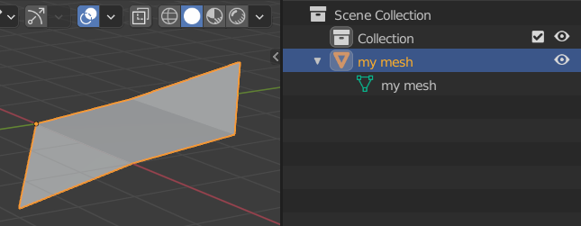
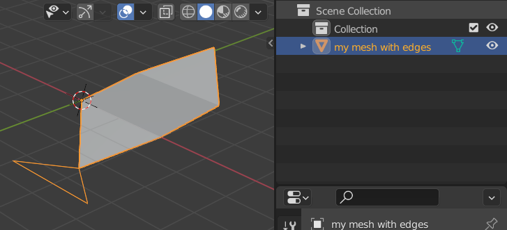

Meshes¶
One of the more common scene data types to work with from Python are 3D meshes. Meshes in Blender can contain polygons of an arbitrary number of vertices (so-called N-gons), can contain wire edges and support extra layers of data, such as vertex colors and UV coordinates.
We go into a fair amount of detail on how to create and access mesh data, in several ways. As usual, the Blender API docs on the Mesh type contain many more details, but we feel the discussion below is a good summary to get you started for many use cases.
Creating a mesh (high-level)¶
As shown earlier the Mesh.from_pydata(vertices, edges, faces) method
allows a simple and high-level way of creating a mesh. This method doesn't offer full control over the created
mesh and isn't very fast for large meshes, but it can be good enough in a lot of cases.
It takes three lists of values, or actually, any Python iterable that matches the expected form:
- vertices: a sequence of float triples, e.g.
[(1.0, 2.0, 3.0), (4, 5, 6), ...] - edges: a sequence of integer pairs (vertex indices), that define edges by. If
[]is passed then edges are inferred from polygons - faces: a sequence of one or more polygons, each defined as a sequence of 3 or more vertex indices. E.g.
[(0, 1, 2), (1, 2, 3, 4), ...]
Info
The choice of how the mesh data is passed might incur an overhead in memory usage and processing time, especially when regular Python data structures, like lists, are used. An alternative would be to pass NumPy arrays.
For the examples below we assume that no explicit list of edges is passed. Edges will then be created implicitly based on the polygons specified, which is usually what is preferred. We discuss explicitly specifying edges below.
An example of creating a simple mesh:
# Create a mesh consisting of 3 polygons using 6 vertices
vertices = [
(0, 0, 0), (2, 0, 0), (2, 2, 0.2),
(0, 2, 0.2), (1, 3, 1), (1, -1, -1),
]
polygons = [
(0, 1, 2, 3), # Quad
(4, 3, 2), # Triangle
(0, 5, 1) # Triangle
]
m = bpy.data.meshes.new(name='my mesh')
m.from_pydata(vertices, [], polygons)
At this point we have created a new Mesh object, which corresponds to Object Data of type Mesh.
Object Data cannot be directly added to a scene, but needs to be referenced by a 3D Object:
# Create an Object referencing the Mesh data
o = bpy.data.objects.new(name='my mesh', object_data=m)
# Add the Object to the scene
bpy.context.scene.collection.objects.link(o)
The resulting mesh and outliner entry looks like this:

Careful: invalid data¶
Note that it is possible to set up a mesh with invalid/inconsistent data when setting the underlying arrays manually, as is the case here. This can cause weird behaviour or even crashes.
For example:
# 3 vertices
vertices = [ (0, 0, 0), (1, 1, 1), (-1, 2, -1) ]
# Invalid vertex index 3 used!
polygons = [ (0, 1, 2, 3) ]
m = bpy.data.meshes.new(name='my invalid mesh')
m.from_pydata(vertices, [], polygons)
o = bpy.data.objects.new(name='my invalid mesh', object_data=m)
bpy.context.scene.collection.objects.link(o)
When executing the above code a new mesh is added to the scene, but it will show as a triangle in the 3D viewport, instead of a quad. And even though that doesn't appear to be unreasonable behaviour in this case Blender will crash if we subsequently enter edit mode on the mesh!
So the lesson here is to be careful when specifying geometry using these low-level API calls. This actually applies to all parts of the Blender Python API in general.
In this case, to make sure a created mesh has valid data we can use the validate() method
on a Mesh. This will check the mesh data and remove any invalid values, e.g. by deleting
the polygon using non-existent vertex index 3 above. This might not result in a mesh that
matches what you want based on the data, but at least you can detect this situation and handle it without Blender crashing.
The validate() method has two issues to be aware of:
- The method returns
Truein case the mesh does not validate, i.e. when it has issues. More specifically, it returnsTruewhen changes were made to the mesh data to remove invalid values. - It will only report on the specific issues found when called with
validate(verbose=True)and then will only output to the console.
But it is still a good idea to always validate a mesh when creating it manually:
...
m = bpy.data.meshes.new(name='my invalid mesh')
m.from_pydata(vertices, [], polygons)
if m.validate(verbose=True):
print('Mesh had issues and has been altered! See console output for details')
In the example of the invalid mesh data above this results in these message being printed in the console output:
ERROR (bke.mesh): ../source/blender/blenkernel/intern/mesh_validate.c:351 BKE_mesh_validate_arrays: Edge 0: v2 index out of range, 3
ERROR (bke.mesh): ../source/blender/blenkernel/intern/mesh_validate.c:351 BKE_mesh_validate_arrays: Edge 3: v2 index out of range, 3
ERROR (bke.mesh): ../source/blender/blenkernel/intern/mesh_validate.c:605 BKE_mesh_validate_arrays: Loop 3 has invalid vert reference (3)
ERROR (bke.mesh): ../source/blender/blenkernel/intern/mesh_validate.c:782 BKE_mesh_validate_arrays: Loop 0 is unused.
ERROR (bke.mesh): ../source/blender/blenkernel/intern/mesh_validate.c:782 BKE_mesh_validate_arrays: Loop 1 is unused.
ERROR (bke.mesh): ../source/blender/blenkernel/intern/mesh_validate.c:782 BKE_mesh_validate_arrays: Loop 2 is unused.
ERROR (bke.mesh): ../source/blender/blenkernel/intern/mesh_validate.c:782 BKE_mesh_validate_arrays: Loop 3 is unused.
After validate() returns we can see in this case that invalid data was indeed removed:
>>> vertices = [ (0, 0, 0), (1, 1, 1), (-1, 2, -1) ]
>>> polygons = [ (0, 1, 2, 3) ]
>>> m = bpy.data.meshes.new(name='my invalid mesh')
>>> m.from_pydata(vertices, [], polygons)
>>> len(m.polygons)
1
>>> len(m.edges)
4
>>> len(m.vertices)
3
>>> m.validate()
True
>>> len(m.polygons)
0
>>> len(m.edges)
2
>>> len(m.vertices)
3
Creating a mesh (low-level)¶
A second, and more flexible, way of creating a mesh is using low-level calls
for setting the necessary data arrays directly on a Mesh object. This is especially useful in combination
with NumPy arrays, as this allows the creation of large meshes with relatively
high performance and low memory overhead.
Meshes in Blender are stored using 4 arrays, as attributes of the bpy.types.Mesh type:
vertices: vertex locations, each specified by 3 floats
loops: contains the vertex indices used for defining polygons of a mesh, each polygon as a sequence of indices in theverticesarray
polygons: defines the start index of each polygon as an index inloops, plus the length of each polygon in number of vertices
edges: defines the edges of the mesh, using two vertex indices per edge
So to create a mesh at this level we need to set up the necessary values for these arrays. Here, we create the same mesh as in the previous section, using NumPy arrays for storing the data.
# Vertices (8): x1 y1 z1 x2 y2 z2 ...
vertices = numpy.array([
0, 0, 0, 2, 0, 0, 2, 2, 0.2, 0, 2, 0.2,
1, 3, 1, 1, -1, -1, 0, -2, -1, 2, -2, -1
], dtype=numpy.float32)
#
# Polygons, defined in loops
#
# List of vertex indices of all loops combined
vertex_index = numpy.array([
0, 1, 2, 3, # Quad
4, 3, 2, # Triangle
0, 5, 1 # Triangle
], dtype=numpy.int32)
# For each polygon the start of its indices in vertex_index
loop_start = numpy.array([
0, 4, 7
], dtype=numpy.int32)
# Length of each polygon in number of vertices
loop_total = numpy.array([
4, 3, 3
], dtype=numpy.int32)
We additionally also specify texture coordinates and vertex colors. This is something
that is not possible with the high-level from_pydata() API shown above. Note that
we need to specify these values per vertex per polygon loop.
# Texture coordinates per vertex per polygon loop
uv_coordinates = numpy.array([
0, 0, 1, 0, 1, 1, 0, 1, # Quad
0.5, 1, 0, 0, 1, 0, # Triangle
0, 1, 0.5, 0, 1, 1 # Triangle
], dtype=numpy.float32)
# Vertex color (RGBA) per vertex per polygon loop
vertex_colors = numpy.array([
1, 0, 0, 1, 1, 0, 0, 1, 1, 0, 0, 1, 1, 0, 0, 1,
0, 1, 0, 1, 0, 1, 0, 1, 0, 1, 0, 1,
1, 0, 0, 1, 0, 1, 0, 1, 0, 0, 1, 1,
], dtype=numpy.float32)
Next, we create a new mesh using the above arrays:
num_vertices = vertices.shape[0] // 3
num_vertex_indices = vertex_index.shape[0]
num_loops = loop_start.shape[0]
m = bpy.data.meshes.new(name='my detailed mesh')
# Vertices
m.vertices.add(num_vertices)
m.vertices.foreach_set('co', vertices)
# Polygons
m.loops.add(num_vertex_indices)
m.loops.foreach_set('vertex_index', vertex_index)
m.polygons.add(num_loops)
m.polygons.foreach_set('loop_start', loop_start)
m.polygons.foreach_set('loop_total', loop_total)
# Create UV coordinate layer and set values
uv_layer = m.uv_layers.new(name='default')
uv_layer.data.foreach_set('uv', uv_coordinates)
# Create vertex color layer and set values
vcol_layer = m.color_attributes.new(name='vcol', type='FLOAT', domain='CORNER')
vcol_layer.data.foreach_set('color', vertex_colors)
# Done, update mesh object
m.update()
# Validate mesh
if m.validate(verbose=True):
print('Mesh data did not validate!')
# Create an object referencing the mesh data
o = bpy.data.objects.new(name='my detailed mesh', object_data=m)
# Add the object to the scene
bpy.context.scene.collection.objects.link(o)
Info
Passing a multi-dimensional NumPy array directly to foreach_set() will not work:
>>> vertices = numpy.array([
... (0, 0, 0), (2, 0, 0), (2, 2, 0.2), (0, 2, 0.2),
... (1, 3, 1), (1, -1, -1), (0, -2, -1), (2, -2, -1)
... ], 'float32')
>>> vertices.shape
(8, 3)
>>> m = bpy.data.meshes.new(name='my detailed mesh')
>>> m.vertices.foreach_set('co', vertices)
Traceback (most recent call last):
File "<blender_console>", line 1, in <module>
RuntimeError: internal error setting the array
However, passing a flattened array does work:
>>> m.vertices.foreach_set('co', vertices.flatten())
>>> [v.co for v in mesh.vertices]
[Vector((0.0, 0.0, 0.0)), Vector((2.0, 0.0, 0.0)), Vector((2.0, 2.0, 0.20000000298023224)), Vector((0.0, 2.0, 0.20000000298023224)), Vector((1.0, 3.0, 1.0)), Vector((1.0, -1.0, -1.0)), Vector((0.0, -2.0, -1.0)), Vector((2.0, -2.0, -1.0))]
Specifying edges when creating a mesh¶
In most cases we want to create a mesh consisting of only polygons and in that case don't need to specify edges. For certain mesh objects it can be of interest to also be able to specify edges explicitly, or even to create a mesh that consists only of vertices and edges between them. Edges can be used to add line segments that are not part of polygons.
We build upon the example mesh we created above by adding a set of 3 edges:
# Create a mesh consisting of 3 polygons using 8 vertices, with 3 extra edges
# that are not part of the polygons
vertices = [
(0, 0, 0), (2, 0, 0), (2, 2, 0.2), (0, 2, 0.2),
(1, 3, 1), (1, -1, -1), (0, -2, -1), (2, -2, -1)
]
edges = [
(5, 6), (6, 7), (5, 7)
]
polygons = [
(0, 1, 2, 3), # Quad
(4, 3, 2), # Triangle
(0, 5, 1) # Triangle
]
m = bpy.data.meshes.new(name='my mesh with edges')
m.from_pydata(vertices, edges, polygons)
o = bpy.data.objects.new(name='my mesh with edges', object_data=m)
bpy.context.scene.collection.objects.link(o)
The resulting mesh and outliner entry looks like this:

Note that even though we specified only 3 edges explicitly the polygons in the mesh implicitly define 8 more. These are the edges making up those polygons, with shared edges being present only once. In total this results in 11 edges in the mesh:
For the second, low-level, method of mesh creation edges are handled slightly different.
Edges can be set explicitly by using Mesh.edges:
# Vertices (8): x1 y1 z1 x2 y2 z2 ...
vertices = numpy.array([
0, 0, 0, 2, 0, 0, 2, 2, 0.2, 0, 2, 0.2,
1, 3, 1, 1, -1, -1, 0, -2, -1, 2, -2, -1
], dtype=numpy.float32)
# Extra edges (3) not defined implicitly by polygons
edges = numpy.array([
5, 6, 6, 7, 5, 7
], dtype=numpy.int32)
#
# Polygons, defined in loops
#
# List of vertex indices of all loops combined
vertex_index = numpy.array([
0, 1, 2, 3, # Quad
4, 3, 2, # Triangle
0, 5, 1 # Triangle
], dtype=numpy.int32)
# For each polygon the start of its indices in vertex_index
loop_start = numpy.array([
0, 4, 7
], dtype=numpy.int32)
# Length of each polygon in number of vertices
loop_total = numpy.array([
4, 3, 3
], dtype=numpy.int32)
num_vertices = vertices.shape[0] // 3
num_edges = edges.shape[0] // 2
num_vertex_indices = vertex_index.shape[0]
num_loops = loop_start.shape[0]
m = bpy.data.meshes.new(name='detailed mesh with edges')
# Vertices
m.vertices.add(num_vertices)
m.vertices.foreach_set('co', vertices)
# Edges
m.edges.add(num_edges)
m.edges.foreach_set('vertices', edges)
# Polygons
m.loops.add(num_vertex_indices)
m.loops.foreach_set('vertex_index', vertex_index)
m.polygons.add(num_loops)
m.polygons.foreach_set('loop_start', loop_start)
m.polygons.foreach_set('loop_total', loop_total)
# Done, update mesh object
m.update()
# Validate mesh
if m.validate(verbose=True):
print('Mesh data did not validate!')
Here, we only specify the extra edges and not the polygon edges. But when we try to validate the mesh errors will be reported:
ERROR (bke.mesh): ../source/blender/blenkernel/intern/mesh_validate.c:628 BKE_mesh_validate_arrays: Poly 0 needs missing edge (0, 1)
ERROR (bke.mesh): ../source/blender/blenkernel/intern/mesh_validate.c:628 BKE_mesh_validate_arrays: Poly 0 needs missing edge (1, 2)
ERROR (bke.mesh): ../source/blender/blenkernel/intern/mesh_validate.c:628 BKE_mesh_validate_arrays: Poly 0 needs missing edge (2, 3)
ERROR (bke.mesh): ../source/blender/blenkernel/intern/mesh_validate.c:628 BKE_mesh_validate_arrays: Poly 0 needs missing edge (3, 0)
ERROR (bke.mesh): ../source/blender/blenkernel/intern/mesh_validate.c:628 BKE_mesh_validate_arrays: Poly 1 needs missing edge (4, 3)
ERROR (bke.mesh): ../source/blender/blenkernel/intern/mesh_validate.c:628 BKE_mesh_validate_arrays: Poly 1 needs missing edge (3, 2)
ERROR (bke.mesh): ../source/blender/blenkernel/intern/mesh_validate.c:628 BKE_mesh_validate_arrays: Poly 1 needs missing edge (2, 4)
ERROR (bke.mesh): ../source/blender/blenkernel/intern/mesh_validate.c:628 BKE_mesh_validate_arrays: Poly 2 needs missing edge (0, 5)
ERROR (bke.mesh): ../source/blender/blenkernel/intern/mesh_validate.c:628 BKE_mesh_validate_arrays: Poly 2 needs missing edge (5, 1)
ERROR (bke.mesh): ../source/blender/blenkernel/intern/mesh_validate.c:628 BKE_mesh_validate_arrays: Poly 2 needs missing edge (1, 0)
So the polygon edges, which we did not specify, are being reported. In this case the validate() method will correct this and add the missing edges. But having
errors reported for regular polygon edges makes it harder to detect any other issues with the mesh data.
So the Mesh.update() method provides the option calc_edges. By default this option is False,
but when set to True all edges in the mesh will be recalculated to be consistent with the available vertex indices,
polygons and extra edges set.
Validation now succeeds:
Accessing mesh data (object mode)¶
Inspecting or using mesh data is straightforward. Here we use one of the
meshes created with the low-level methods above and retrieve some of its data. Note that Blender provides
a few values derived from the original arrays, such as loop_indices and vertices per polygon, which can be useful for
certain operations.
m = bpy.data.meshes['my detailed mesh']
len(m.vertices) => 8
len(m.polygons) => 3
# 2 triangles + 1 quad = 2*3 + 1*4 = 10
len(m.loops) => 10
# 8 implicit edges (for 2 triangles and 1 quad), shared edges only listed once
len(m.edges) => 8
m.vertices[7].co => Vector((2.0, -2.0, -1.0)) # Coordinate
m.vertices[7].normal => Vector((0.6.., -0.6.., -0.3..)) # Normal
m.vertices[7].select => True # Selected (edit mode)
m.polygons[2].index => 2 # Useful in 'for p in m.polygons'
m.polygons[2].loop_start => 7 # First index in loops array
m.polygons[2].loop_total => 3 # Number of vertices in loop
m.polygons[2].loop_indices => [7, 8, 9] # Indices in m.loops
m.loops[7].vertex_index => 0
m.loops[8].vertex_index => 5
m.loops[9].vertex_index => 1
m.polygons[2].vertices => [0, 5, 1] # Actual vertex indices
m.polygons[2].select => True # Selected (edit mode)
m.polygons[2].use_smooth => False # Smooth shading enabled
# These are automatically computed
m.polygons[2].area => 1.4142135381698608
m.polygons[2].normal => Vector((0.0, -0.707..., 0.707...))
m.polygons[2].center => Vector((1.0, -0.333..., -0.333...))
m.edges[0].vertices => [2, 3] # (bpy_prop_array)
Starting with Blender 3.1 there's new attributes vertex_normals and polygon_normals on Mesh objects to access normals directly
from the underlying array they're stored in:
# Access per vertex, as above
>>> m.vertices[0].normal
Vector((-0.5773503184318542, -0.5773503184318542, -0.5773503184318542))
# Access from array of vertex normals
>>> m.vertex_normals[0].vector
Vector((-0.5773503184318542, -0.5773503184318542, -0.5773503184318542))
# Access per polygon, as above
>>> m.polygons[0].normal
Vector((-1.0, -0.0, 0.0))
# Access from array of polygon normals
>>> m.polygon_normals[0].vector
Vector((-1.0, 0.0, 0.0))
The array-based normal access is more efficient that accessing the normal value of a MeshVertex. Note that vertex_normals and polygon_normals
only provide read-only access.
Vertex colors¶
A mesh can have multiple sets of vertex colors. Each set has a name and for each vertex the associated color (but see below). By default meshes created in Blender do not have a vertex color layer, so it needs to be created explicitly.
>>> m
bpy.data.meshes['Cube']
>>> type(m.vertex_colors)
<class 'bpy_prop_collection'>
# Create a new vertex color layer
>>> vcol_layer = m.vertex_colors.new(name='My vertex colors')
>>> vcol_layer
bpy.data.meshes['Cube'].vertex_colors["My vertex colors"]
>>> len(m.vertex_colors)
1
# Name shown under Object Data -> Vertex Colors
>>> vcol_layer.name
'My vertex colors'
The vertex colors themselves are accessed through the data member:
>>> type(vcol_layer.data)
<class 'bpy_prop_collection'>
>>> len(vcol_layer.data)
24
>>> type(vcol_layer.data[0].color)
<class 'bpy_prop_array'>
>>> list(vcol_layer.data[0].color)
[1.0, 1.0, 1.0, 1.0]
>>> len(m.polygons)
6
>>> len(m.vertices)
8
>>> len(m.loops)
24
One thing to notice here is that the vertex color array has 24 entries. But the Cube object only has 8 vertices and 6 polygons. The reason for the higher number of vertex colors is that Blender stores separate vertex colors per polygon. So the Cube has 6 polygons, each defined using 4 vertices, hence 6*4=24 vertex colors in total (which is the same number as the length of the loops array).
This is more flexible than what most 3D file formats allow, which usually only store one color per vertex. During import Blender will duplicate those colors to set the same color for a vertex in all polygons in which it is used. An example of how to take advantage of the added flexibility is that we can set a random color per cube face by setting each of the 4 vertex colors of a face to the same color:
for i in range(6):
r = random()
g = random()
b = random()
for j in range(4):
vcol_layer.data[4*i+j].color = (r, g, b, 1)
A slightly more Blender-like (and robust) way to write the above code would be to take advantage of the polygon loop indices:
for p in m.polygons:
r = random()
g = random()
b = random()
for i in p.loop_indices:
vcol_layer.data[i].color = (r, g, b, 1)
Vertex color space changed in 3.2+
In Blender 3.2 the interpretation of vertex colors values was changed. Previously, vertex color RGB values were assumed to be in sRGB color space. But from 3.2 onwards they are assumed to be in scene linear color space. Specifically, the vcol_attr.data[i].color attribute assumes linear values are passed, while `vcol_attr.data[i].color_srgb can be used to set sRGB values (the latter will use automatic conversion where needed).
When passing the wrong values, i.e. sRGB instead of linear, the difference in color can be subtle, but noticeable. Below is the same set of values, but one passed as sRGB (left), the other as linear (right):
To manually convert a color value between the two color spaces use the functions from mathutils.Color, specifically from_scene_linear_to_srgb() and from_srgb_to_scene_linear().
Active set¶
As noted above a mesh can have more than one layer of vertex colors. Among the sets present on a mesh there can be only one that is active. The active vertex color layer set controls, for example, which vertex colors are visible in the 3D viewport and are edited in Vertex Paint mode.
When adding a vertex color layer (and similar for UV maps described below) through the UI the active layer is changed to the newly added layer. Also, clicking in the Vertex Color layer UI changes the active layer. Below is a list of 2 vertex color layers on a mesh shown, of which Col is the active one used in vertex paint mode.
The camera icon right of the vertex color names controls which layer is used during rendering by default (and which is set independently of the active status). But in most cases the shader used on an object will explicitly choose a vertex color layer using an Attribute node and so override the setting in the UI list.
XXX doesn't seem to work in 3.6?
Controlling the active vertex color (or UV map) layer can be done using the active property:
>>> m.vertex_colors.active_index
1
>>> m.vertex_colors.active
bpy.data.meshes['Cube'].vertex_colors["Another layer"]
>>> m.vertex_colors.active = m.vertex_colors[0]
>>> m.vertex_colors.active
bpy.data.meshes['Cube'].vertex_colors["Col"]
UV coordinates¶
UV coordinates follow the same setup as vertex colors, but instead store a 2-tuple of floats per vertex per polygon. Note that just like for vertex colors UV coordinates are also specified per vertex per polygon.
Meshes created in Blender will already have a UV map called UVMap:
The actual UV values are once again stored under the data member:
>>> uv_map = m.uv_layers[0]
>>> uv_map
bpy.data.meshes['Cube'].uv_layers["UVMap"]
>>> type(uv_map.data)
<class 'bpy_prop_collection'>
>>> len(uv_map.data)
24
>>> type(uv_map.data[0])
<class 'bpy.types.MeshUVLoop'>
>>> uv_map.data[0].uv
Vector((0.375, 0.0))
In general, UV maps are either set through importing or edited within Blender using the UV Editor, although there can be valid reasons for wanting to control them through the Python API.
BMesh¶
There is another method in Blender for creating meshes and accessing their data: the so-called BMesh, which is implemented by the bmesh module and its BMesh class. BMesh is especially interesting when you want to perform more complex geometric operations on an existing mesh, or build up a mesh polygon-by-polygon instead of providing the full mesh in one go as a set of arrays as shown above. Also, a large set of high- and low-level geometric operations on BMeshes is available, such as merging vertices within a given distance, face splitting, edge collapsing or generating a convex hull. These are provided in the bmesh.ops and bmesh.utils modules. These operations would be tedious and error prone to script manually.
In this section we only give a brief overview of BMesh and refer to the API docs for all the details.
The differences of BMesh compared to working with the native mesh data structure we showed above:
- A BMesh holds extra data on mesh connectivity, like the neighbours of a vertex, which can be easily queried for geometric editing. The trade-off is that a BMesh will use more memory to store all this extra data, but that is usually only a limiting factor for very large meshes.
- It is somewhat slower to create a (large) mesh using a BMesh, as each mesh element (vertex, edge, polygon) takes a Python call to create, plus needs extra calls and Python values to set up.
- A BMesh cannot be used directly in a scene, it first needs to be converted (or copied back) to a
Mesh. So mesh data is present twice in memory at some point in time, in the two different forms.
Here's a (verbose) example of create a BMesh from scratch that holds a single triangle and edge:
import bpy, bmesh
bm = bmesh.new()
# Create 4 vertices
v1 = bm.verts.new((0, 0, 0))
v2 = bm.verts.new((1, 0, 1))
v3 = bm.verts.new((0, 1, 1))
v4 = bm.verts.new((1, 1, 1))
# Add a triangle
bm.faces.new((v1, v2, v3))
# Add a line edge
bm.edges.new((v3, v4))
# Done setting up the BMesh, now copy geometry to a regular Mesh
m = bpy.data.meshes.new('mesh')
bm.to_mesh(m)
# Release BMesh data, bm will no longer be usable
bm.free()
# Add regular Mesh as object
o = bpy.data.objects.new('mesh', m)
bpy.context.scene.collection.objects.link(o)
A BMesh can also be created from an existing Mesh, edited and then copied back to the Mesh:
o = bpy.context.active_object
m = o.data
# Create a new BMesh and copy geometry from the Mesh
bm = bmesh.new()
bm.from_mesh(m)
# Edit some geometry
bm.verts.ensure_lookup_table()
bm.verts[4].co.x += 3.14
bm.faces.ensure_lookup_table()
bm.faces.remove(bm.faces[0])
# Copy back to Mesh
bm.to_mesh(m)
bm.free()
If a Mesh is currently in edit mode you can still create a BMesh from it, edit that and the copy the changes back, while keeping the Mesh in edit mode:
o = bpy.context.active_object
m = o.data
assert m.mode == 'EDIT'
bm = bmesh.new()
# Note the different call, from_edit_mesh() instead of from_mesh()
bm.from_edit_mesh(m)
# <edit BMesh>
# Update edit-mesh of Mesh (again, different call)
bm.update_edit_mesh(m)
bm.free()
This can be useful when you're working in edit mode on a mesh and also want to run a script on it that uses BMesh, but don't want to switch in and out of edit-mode to run the script.
Warning
There are some things to watch out for when synchronizing BMesh state to a Mesh, see here.
Some examples of the geometric queries that you can do on a BMesh (see docs for more):
bm.verts[i] # Sequence of mesh vertices (read-only)
bm.edges[i] # Sequence of mesh edges (read-only)
bm.faces[i] # Sequence of mesh faces (read-only)
bm.verts[i].co # Vertex coordinate as a mathutils.Vector
bm.verts[i].normal # Vertex normal
bm.verts[i].is_boundary # True if vertex is at the mesh boundary
bm.verts[i].is_wire # True if vertex is not connected to any faces
bm.verts[i].link_edges # Sequence of edges connected to this vertex
bm.verts[i].link_faces # Sequence of faces connected to this vertex
bm.verts[i].index # Index in bm.verts
bm.edges[i].calc_length() # Length of the edge
bm.edges[i].is_boundary # True if edge is boundary of a face
bm.edges[i].is_wire # True if edge is not connected to any faces
bm.edges[i].is_manifold # True if edge is manifold (used in at most 2 faces)
v = bm.edges[i].verts[0] # Get one vertex of this edge
bm.edges[i].other_vert(v) # Get the other vertex
bm.edges[i].link_faces # Sequence of faces connected to this edge
bm.edges[i].index # Index in bm.edges
bm.faces[i].calc_area() # Face area
bm.faces[i].calc_center_median() # Median center
bm.faces[i].edges # Sequence of edges defining this face
bm.faces[i].verts # Sequence of vertices defining this face
bm.faces[i].normal # Face normal
bm.faces[i].index # Index in bm.faces
Indices
The use of indices above, both to index the sequences of vertices/edges/faces as well as retrieving .index values, requires up-to-date indices.
During operations on a BMesh the indices (and sequences) might become incorrect and need an update first.
To ensure the .index values of vertices, edges and faces are correct call the respective index_update() method on their sequence:
To ensure you can correctly index bm.verts, bm.edges and bm.faces call the respective ensure_lookup_table() method:
A Blender mesh can contain polygons with an arbitrary number of vertices. Sometimes it can be desirable to work on triangles only. You can convert all non-triangle
faces in a BMesh to triangles with a call to bmesh.ops.triangulate():
bm = bmesh.new()
v1 = bm.verts.new((0, 0, 0))
v2 = bm.verts.new((1, 0, 1))
v3 = bm.verts.new((0, 1, 1))
v4 = bm.verts.new((1, 1, 1))
# Add a quad
bm.faces.new((v1, v2, v3, v4))
# Ensure indices printed are correctly
bm.verts.index_update()
for f in bm.faces:
print([v.index for v in f.verts])
# Force triangulation. The list of faces can optionally be a subset of the faces in the mesh.
bmesh.ops.triangulate(bm, faces=bm.faces[:])
print('After triangulation:')
for f in bm.faces:
print([v.index for v in f.verts])
# Output:
#
# [0, 1, 2, 3]
# After triangulation:
# [0, 2, 3]
# [0, 1, 2]